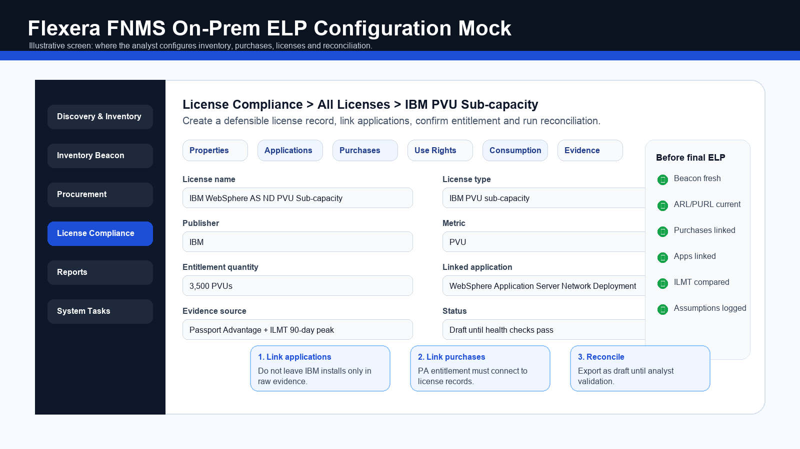
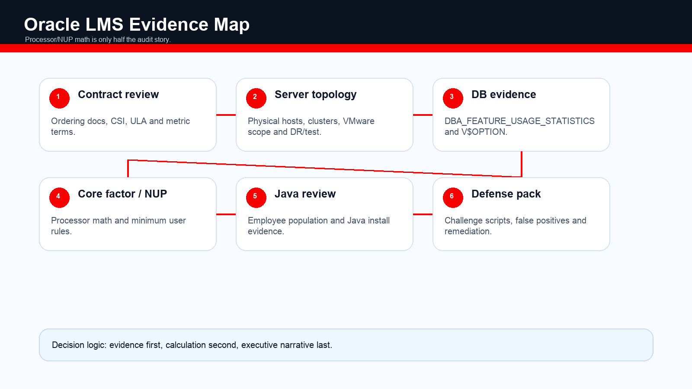

Practitioner Notes
Oracle opener: “I separate database core/NUP, options usage, virtualization boundary, Java, and contract/ULA logic.”
| Family | Products | Metrics | Watchout |
|---|---|---|---|
| Database | Enterprise Edition, Standard Edition 2, RAC, Data Guard | Processor, NUP | Options/packs are separate licenses and feature usage matters. |
| Middleware | WebLogic Suite, SOA, Forms, BI | Processor, NUP | WebLogic edition and installed components drive exposure. |
| Java SE | Java SE subscription | Employee metric / named user plus legacy | Employee count can cover all employees, contractors, outsourcers. |
| Applications | E-Business Suite, PeopleSoft, JD Edwards, Siebel | Application user / module metrics | Module usage and named user definitions vary by contract. |
| Cloud / Fusion / OCI | Fusion apps, OCI DB services | Subscription / cloud consumption | OCI has different licensing and BYOL rules than AWS/Azure. |
| MySQL Enterprise | MySQL Enterprise Edition | Subscription/server | Often missed outside Oracle DB scope. |
Practitioner Notes
Say the formula first, then immediately talk virtualization boundary.
| Metric | Formula / Rule | Example | Trap |
|---|---|---|---|
| Processor | Physical cores x Oracle core factor, rounded up per product terms. | 20 Intel cores x 0.5 = 10 Processor licenses. | Processor definition depends on partitioning and virtualization boundary. |
| Named User Plus | Actual named users/devices, subject to minimums per processor. | EE often 25 NUP per Processor minimum; 10 processors = 250 NUP minimum. | If actual users are 80, minimum may still require 250. |
| Java employee metric | Employee count can include employees plus contractors/agents supporting business operations. | 5,000 employees = 5,000 Java employee subscriptions unless contract differs. | Java exposure moved from install count to broad employee population. |
Processor Licenses = Physical_Cores * Core_Factor\nNUP Required = MAX(Actual_Named_Users, Processor_Licenses * NUP_Minimum_Per_Processor)\nPosition = Entitled - RequiredOracle Processor Calculator
Practitioner Notes
Practitioners want to hear “hard vs soft partitioning” and “VMware boundary evidence.”
Oracle partitioning is one of the highest-risk areas in SAM. Oracle distinguishes hard partitioning, which may limit licensing to a defined partition when approved, from soft partitioning, which Oracle generally does not accept to limit license requirements.
| Platform / Scenario | Oracle View | ELP Treatment |
|---|---|---|
| VMware cluster | High risk; Oracle often argues all physical cores in accessible cluster/vCenter may require licensing. | Map cluster, host affinity, vCenter boundaries, and contracts; document exposure scenario. |
| Hard partitioning approved tech | May limit licensing if configured according to Oracle policy. | Collect configuration evidence and policy alignment. |
| Soft partitioning | Generally not accepted to limit licensing. | Use broader physical boundary as risk scenario. |
| AWS/Azure | Specific cloud policies and vCPU-to-license rules; not identical to on-prem. | Use current cloud policy and contract terms. |
| OCI | Oracle cloud has clearer BYOL and included-license models. | Separate OCI evidence from third-party cloud. |
A database VM on one host can become a cluster or vCenter exposure discussion if mobility is not controlled and evidenced. This is often the largest Oracle finding.
Practitioner Notes
Strong line: “For Oracle, installed is not enough; feature usage is the compliance trigger for options and packs.”
Oracle Database Enterprise Edition options and management packs are separately licensable. The ELP must review not only installed binaries but feature usage. DBA_FEATURE_USAGE_STATISTICS and pack access controls become evidence.
| Trap | Evidence | Risk |
|---|---|---|
| Diagnostics Pack | DBA_FEATURE_USAGE_STATISTICS, AWR use | Pack license required if used without entitlement. |
| Tuning Pack | SQL tuning advisor, feature usage | Often enabled accidentally by DBAs. |
| Partitioning / Advanced Compression / RAC | Feature usage and option views | Separate option licenses on top of DB EE. |
| Java SE | Software inventory plus employee population | Employee metric can dwarf install-based estimates. |
| SE2 restrictions | CPU/socket/thread limits | Deployments exceeding restrictions may need EE or remediation. |
Practitioner Notes
The Oracle manual ELP answer must include queries, options usage, and virtualization boundary.
- Scope Oracle entities, contracts, products, environments, virtualization clusters, cloud platforms, and ULA status.
- Collect hardware and virtualization: physical cores, processor type, core factor, VMware/cluster boundaries.
- Collect installation evidence: oraInventory, opatch lsinventory, ORACLE_HOME, WebLogic homes, Java installs.
- Collect database evidence: V$VERSION, V$OPTION, DBA_FEATURE_USAGE_STATISTICS, users/schemas, options/packs.
- Collect entitlements: ordering documents, OMA/OLSA, CSI, support renewals, ULA terms, cloud BYOL terms.
- Calculate Processor and NUP positions, options/packs add-ons, Java employee requirement, and DR/test exposure.
- Document assumptions and create defense pack before sharing externally.
| Data Category | Manual Source / Command | Expected Output | Validation |
|---|---|---|---|
| Inventory | oraInventory, /etc/oraInst.loc, inventory.xml | Oracle homes and installed products | DBA confirms active vs old homes. |
| Patch/product | opatch lsinventory | Edition, options, patches | Compare to DB version views. |
| Database version | SELECT * FROM V$VERSION; PRODUCT_COMPONENT_VERSION | Edition/version | Confirm production role. |
| Options | V$OPTION and DBA_FEATURE_USAGE_STATISTICS | Used options and packs | Review sample dates and DBA explanation. |
| Users | DBA_USERS, application user exports | NUP counts | Remove technical accounts only with evidence. |
| Cluster mapping | vCenter, host affinity, storage/mobility rules | Licensing boundary | Legal/technical review for VMware exposure. |
| Java | SCCM/Intune/scripts, package managers, process scans | Java installs and versions | Map to employee metric and legacy contracts. |
Please provide Oracle database inventory for all in-scope databases: host, DB name, edition, version, environment, processor/VM mapping, output of V$VERSION, V$OPTION, DBA_FEATURE_USAGE_STATISTICS, opatch lsinventory, and confirmation of options/packs intentionally used.Offer read-only scripts, let DBAs run them internally, accept screenshots/exported CSV with extraction date, and document any unavailable evidence as a risk-bearing assumption.
Practitioner Notes
Oracle no-tool ELP is DBA-led plus infrastructure boundary evidence.
| Need | With Tool | Without Tool | Fallback |
|---|---|---|---|
| DB installations | FNMS inventory/Oracle evidence | oraInventory, opatch, DBA export | Treat discovered homes as active until DBA proves retired. |
| Feature usage | Oracle-specific inventory/scripts | DBA_FEATURE_USAGE_STATISTICS, V$OPTION | Flag unknown as AMBER and request DBA sign-off. |
| Core factor | FNMS core factor lookup | Oracle Core Factor Table matched to CPU | Use conservative processor classification until confirmed. |
| VMware boundary | Virtualization connector | vCenter cluster/affinity export | Scenario model cluster exposure. |
| Java employee count | Inventory plus HR | HR employee/contractor count and Java install list | Use employee metric assumption per current terms. |
Practitioner Notes
Say: “For Oracle, FNMS is a model input, not the whole audit defense.”
| Step | FNMS Action | Oracle Validation |
|---|---|---|
| 1. Validate inventory | Confirm Oracle evidence collection and virtualization connectors. | Oracle homes, DB instances, host mapping, VMware clusters. |
| 2. Check recognition | Review ARL recognition for DB, WebLogic, Java, options evidence. | Unrecognized Oracle evidence can be material. |
| 3. Configure core factors | Validate processor model and Oracle core factor lookup. | Wrong factor directly misstates Processor licenses. |
| 4. Load entitlements | Import ordering documents/support/ULA quantities. | Contracts may include special terms not captured by default. |
| 5. Reconcile DB/options | Review DB EE, SE2, options/packs, NUP minimums. | Feature usage may need DBA validation outside FNMS. |
| 6. Validate before presenting | Cross-check against DBA scripts, vCenter, contracts, and ULA terms. | FNMS alone rarely resolves VMware or ULA nuance. |
FNMS is useful for inventory and license calculations, but final Oracle ELP requires DBA feature evidence, virtualization boundary review, core factor validation, and contract/ULA interpretation.

Practitioner Notes
Oracle validation is where senior consultants earn trust.
| Health Check | Pass Criteria | Why It Matters |
|---|---|---|
| Oracle inventory evidence complete | All in-scope DB servers scanned with Oracle evidence | Missing homes hide DB/options. |
| VMware clusters mapped | VM-to-host-to-cluster boundaries visible | Processor exposure depends on boundary. |
| Core factor current | CPU models mapped to Oracle core factor | Formula output depends on factor. |
| Options usage reviewed | DBA evidence imported or separately reviewed | Options/packs drive major findings. |
| Entitlements linked | Orders and support mapped to licenses | Unlinked support/orders create false gaps. |
| ULA flag handled | ULA products and certification terms isolated | ULA positions require special logic. |
Practitioner Notes
Say: “I build the counter-ELP before Oracle sees the data.”
Oracle LMS/GLAS audits commonly request scripts, server inventories, VMware architecture, database options usage, user counts, Java deployment data, and contract records. Build a counter-ELP before running or sharing audit scripts externally.
| Audit Request | Defense Approach |
|---|---|
| Oracle scripts | Run internally under DBA control, review output, keep extraction date and scope. |
| VMware architecture | Provide scoped diagrams only after legal review; model risk before disclosure. |
| Options/packs usage | Validate feature usage dates, sample counts, and accidental use remediation. |
| ULA certification | Freeze deployment scope, count certification quantities, verify included products only. |
| Java estate | Separate legacy entitlements from current employee metric exposure. |

Practitioner Notes
Never treat a ULA as unlimited for every Oracle product.
Oracle entitlement records include ordering documents, OMA/OLSA terms, CSI/support renewals, license sets, cloud BYOL terms, and ULA agreements. ULA work is not normal reconciliation: it is certification strategy.
| Concept | Meaning | Risk |
|---|---|---|
| OMA / OLSA | Master terms governing license rights | Special terms may override generic metric assumptions. |
| Ordering document | Product, metric, quantity, level, CSI | Exact wording matters. |
| Support renewal | Support quantities and CSI | Support does not always equal full entitlement truth. |
| ULA | Unlimited deployment for listed products during term, certification at end | Missing products or poor certification count can create massive exposure. |
| BYOL | Bring eligible licenses to cloud | Cloud policy and contract must support claim. |
Practitioner Notes
The workbook mirrors processor, NUP, options, Java, and VMware risk logic.
| Product | Metric | Required | Entitled | Position | Status | Note |
|---|---|---|---|---|---|---|
| Oracle DB Enterprise Edition | Processor | 10 | 8 | -2 | RED | 20 Intel cores x 0.5 core factor. |
| Diagnostics Pack | Processor | 10 | 0 | -10 | RED | Feature usage detected. |
| Oracle DB EE NUP | NUP | 250 | 300 | +50 | GREEN | NUP minimum exceeds actual users. |
| Java SE | Employee | 5000 | 4000 | -1000 | RED | Employee metric shortfall. |
Practitioner Notes
Oracle answers must be cautious, evidence-led, and contract-aware.
How do you calculate Oracle Processor licenses?
Physical cores multiplied by the Oracle core factor, adjusted for the licensable boundary. For 20 Intel cores at 0.5, the requirement is 10 Processor licenses, unless virtualization expands the boundary.
Why it matters: Formula plus boundary awareness.
Why is VMware risky for Oracle?
Oracle often treats VMware as soft partitioning, so a VM can create exposure across all accessible hosts or clusters unless there is strong contractual or technical boundary evidence.
Why it matters: Partitioning knowledge.
How do options and packs create exposure?
Options and packs are separately licensed. If DBA_FEATURE_USAGE_STATISTICS shows use of Diagnostics, Tuning, Partitioning, or Advanced Compression, entitlement must cover it or the feature must be remediated.
Why it matters: Feature usage evidence.
How do you handle Java SE?
I identify Java installations, versions, contractual model, and employee population. Under the employee metric, the count may include employees and external workers supporting operations, not just Java users.
Why it matters: Current Java licensing awareness.
Practitioner Notes
Learn this table cold; it is the Oracle practitioner shortcut.
| # | Trap | Why It Hurts | Control |
|---|---|---|---|
| 1 | VMware full-cluster exposure | Licensing boundary may expand beyond the VM host. | Collect cluster/vCenter/affinity evidence and model scenarios. |
| 2 | Options used without license | Packs/options are separately licensable. | Review DBA_FEATURE_USAGE_STATISTICS. |
| 3 | Java SE employee metric | Employee count can dwarf installs. | Validate contract and HR population. |
| 4 | SE2 restrictions | Technical limits can force edition issue. | Validate sockets/threads/cluster. |
| 5 | Diagnostics/Tuning accidental use | DBA tools enable chargeable features. | Restrict controls and review usage. |
| 6 | AWS/Azure ambiguity | Cloud rules differ from on-prem. | Use current cloud policy and BYOL evidence. |
| 7 | NUP minimums | Minimum exceeds actual users. | Calculate processor-linked minimum. |
| 8 | DR/test exposure | Non-prod can still require licensing. | Review failover and test rights. |
| 9 | ULA mis-certification | End-of-term count becomes future entitlement. | Prepare certification early. |
| 10 | Containers / soft partitioning | Resource limits may not limit license boundary. | Validate Oracle policy and contract. |
Practitioner Notes
Oracle = formula + boundary + feature usage + contract.
Processor
Cores x core factor, but boundary decides cores.
NUP
Max(actual users, processor minimum).
Options
Feature usage matters; installed alone is not enough.
Virtualization
Hard vs soft partitioning; VMware high risk.
Java
Employee metric can include contractors and outsourcers.
ULA
Unlimited only for listed products during term; certification is strategic.